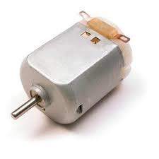
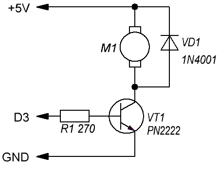
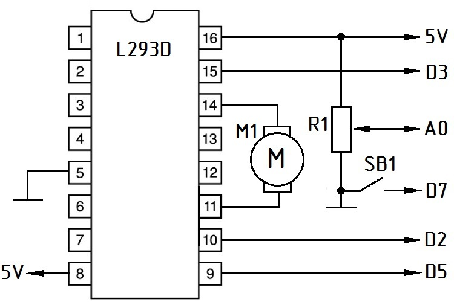
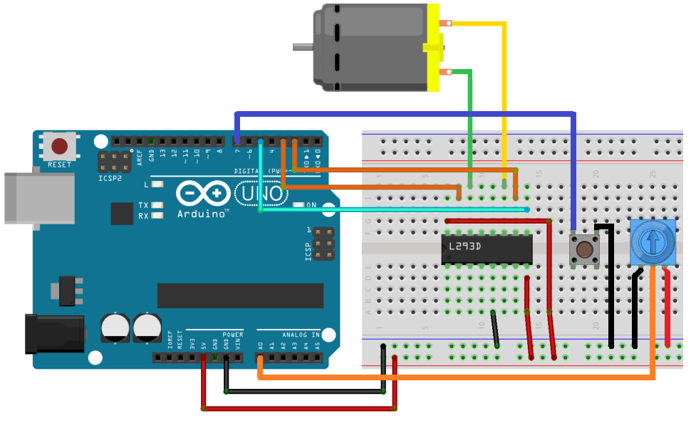

Управление электромотором с помощью Arduino Uno
Электродвигатель (электромотор) постоянного тока является наиболее распространенным типом двигателя в проектах с Arduino Uno. Двигатели постоянного тока обычно имеют только два провода. Если подключить эти провода напрямую к источнику питания (красный - к плюсу, черный - к минусу), двигатель будет вращаться в одну сторону. Если переключить провода, двигатель будет вращаться в противоположном направлении.
Предупреждение. Запрещается приводить двигатель в движение непосредственно от выводов платы Arduino. Это может повредить плату Arduino. Используйте специальные драйвера.

Рис. 1 - Электродвигатель постоянного тока
Для включения и выключения электродвигателя постоянного тока с помощью Arduino Uno можно использовать схему представленную на рис. 2. Транзистор действует как переключатель, управляющий питанием двигателя. Контакт D3 Arduino используется для включения и выключения транзистора. Электромотор будет вращаться на полной скорости, когда на вывод D3 Arduino будет подан сигнал высокого уровня (логическая "1"). При подаче сигнала низкого уровня (логический "0") вращение вала электромотора прекратиться.

Рис. 2 - Схема управления включением/выключением электромотора
При подключении соблюдайте меры предосторожности:
- убедитесь, что выводы транзистора PN2222 (1N2222) подключены правильно;
- катод диода должен быть подключен к + 5 В питания.
Скетч №1
int Pin_motor=3; void setup() { pinMode(Pin_motor, OUTPUT); digitalWrite(Pin_motor, LOW);; } void loop() { digitalWrite(Pin_motor, HIGH);// включаем мотор delay(2000); // время работы мотора 2 сек digitalWrite(Pin_motor, LOW);// выключаем мотор delay(2000); // пауза 2 сек }
Для управления скоростью вращения электромотора можно использовать широтно-импульсную модуляцию (ШИМ). Чем больше будет коэффициент заполнения ШИМ, тем выше будет скорость вращения двигателя.
Скетч №2
int Pin_motor=3; void setup() { pinMode(Pin_motor, OUTPUT); digitalWrite(Pin_motor, LOW);; } void loop() { analogWrite(Pin_motor, 75);// низкая скорость вращения delay(2000); // время работы мотора 2 сек analogWrite(Pin_motor, 250);// высокая скорость вращения delay(2000); // пауза 2 сек }
Для управления направлением вращения двигателя постоянного тока используются схемы, называемые H-мостом. H-мост — это электронная схема, которая может управлять двигателем в обоих направлениях. Они называются H-мостом, потому что он использует четыре транзистора, соединенных таким образом, что принципиальная схема выглядит как «H».
Рассмотрим пример управления направлением и скоростью вращения вала электромотора постоянного тока с использованием Arduino Uno и микросхемы для драйвера двигателя L293D. Для этого необходимо подключить Arduino Uno, электромотор, микросхему L293D, переключатель и переменный резистор как показано на рис. 3.

Рис. 3 - Схема управления направлением и скоростью вращения вала электромотора

Рис. 4 - Монтаж схемы управления направлением и скоростью вращения вала электромотора
Переменный резистор используется для управления скоростью вращения мотора. Кнопка используется для изменения направления вращения вала мотора: если кнопка нажата, мотор будет вращаться вперед, если не нажата – в противоположном направлении. Микроконтроллер Arduino Uno будет управлять контактами Enable2, In3 и In4 микросхемы для драйвера двигателя L293D.
Скетч №3
int Pin_En2=5; int Pin_In3=2; int Pin_In4=3; int Pin_Sw=7; int Pin_R=A0; boolean revers; int v; void setup() { pinMode(Pin_In3, OUTPUT); pinMode(Pin_In4, OUTPUT); pinMode(Pin_En2, OUTPUT); pinMode(Pin_Sw, INPUT_PULLUP); } void loop() { v=analogRead(Pin_R); //получаем значение с потенциометра v=map(v,0,1023,0,255); // масштабируем значение v к интервалу 0-255 revers=digitalRead(Pin_Sw); // определяем состояние кнопки analogWrite(Pin_En2, v); // установка скорости digitalWrite(Pin_In3, !revers); digitalWrite(Pin_In4, revers); }
В функции setup инициализируются и выставляются режимы работы выводов.
С помощью функции map выполняется масштабирование аналоговых данных потенциометра (0–1023) в значения диапазона 0 — 255 скорости вала электромотора.
Переменной revers присваивается значение, которое считывается с вывода Pin_Sw с кнопкой. Если кнопка нажата, значение равно False, в другом случае значение равно True.
Скорость вращения вала устанавливается с использованием analogWrite на выводе Enable2 микросхемы L293. Контакт Enable2 включает-выключает мотор в зависимости от настроек контактов INPUT3 и INPUT4.
Для управления направлением вращения мотора, INPUT3 и INPUT4 должны иметь противоположные значения.
Если INPUT3 имеет значение HIGH, а INPUT4 - LOW, мотор будет двигаться в одном направлении, если INPUT3 принимает значение LOW, а INPUT4 – HIGH, мотор начнет вращаться в противоположном направлении.
Символ "!" является управляющей командой, которая соответствует "НЕ". Первая функция digitalWrite для INPUT3 устанавливает значение в противоположное относительно значения revers. Если revers принимает значение HIGH, устанавливается LOW и наоборот.
Следующая функция digitalWrite для INPUT4 присваивает пину значение revers. Это значит, что оно всегда будет противоположно значению, которое генерируется на Arduino для INPUT3.
Источники
arduino-diy.com - Двигатель постоянного тока, L293D и Arduino
microkontroller.ru - Управление скоростью вращения двигателя постоянного тока с помощью Arduino